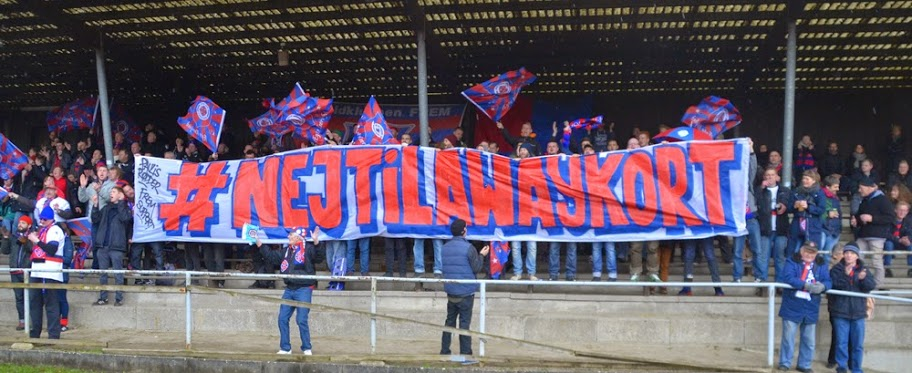

Når jeg går til fodbold ude i det danske land, kan jeg i dag bare købe min billet og tage til fodbold. Men hvis det står til visse mennesker indenfor divisionsforeningen skal man i fremtiden have et såkaldt Away-kort. Et lille plastik kort der har alle dine oplysninger så vagten ved indgangen ved om det er ok du kommer ind eller om du har karantæne og dermed ikke skal ind?
Argumentet for kortet skulle være at man vil se at fodboldballade vil forsvinde fra de danske stadions når man har indført det. Men vil det nu også det? FC Københavns fans har haft Away-kort i 10 år og senest at fanballade var et stort spørgsmål i Danmark var det dem der havde lavet ballade på Brøndby stadion.Ideen med et Away-kort er at folk som har karantæne fra fodbold ikke kommer ind på stadion og laver fanrelateret ballade.
.

Så derfor skal alle som vil med på udebaneture med sit hold betale for et lille plastik kort der angiver dit navn, alder, adresse, ja tilmed højde. Det er jo en fin tanke og et nobelt formål at alle kan gå til fodbold i tryghed og uden at skulle have frygten for at uheldige elementer ødelægger oplevelsen for nogen.
Problemet i mine øjne er bare at man kriminaliserer og registrere en masse fans som bare er fredelige.Derudover er antallet af anholdelser i forbindelse med fodboldkampe aftagende og har været det i mange år. I dag sker der i gennemsnittet én sigtelse per kamp og i forhold til at der kom 1,5 million tilskuer til fodbold i 2016 er et away-kort som at skyde gråspurve med kanoner.
Derudover er antallet af anholdelser i forbindelse med fodboldkampe aftagende og har været det i mange år. I dag sker der i gennemsnittet én sigtelse per kamp og i forhold til at der kom 1,5 million tilskuer til fodbold i 2016 er et away-kort som at skyde gråspurve med kanoner.
Jeg forestår at man gerne vil holde hooligans ude, men hooligans bliver næsten aldrig anholdt på stadion alligevel, det er altid udenfor stadion hvor et away-kort alligevel ikke har en indflydelse.
Derudover kan man samle erfaringer fra andre lande som Italien og Belgien hvor man også har haft de samme problemer og overvejelser. I Belgien ledte Away-kortet til at der kom mindre mennesker på stadion og systemet var i øvrigt vildt ineffektivt, så man droppede det ikke mange år efter. I Italien indførte man også et lignende system, som dog var langt mere bureaukratisk og gik igennem ens bank. Det førte til at systemet ramte de forkerte, nemlig børnefamilierne, som ikke kunne tage en spontan beslutning og tage på stadion bare sådan. De mest fanatiske fans kom uanset og balladen er der stadig.
Der findes flere eksempler som har fejlet og det giver da grund til bekymring for hvad skal man så gøre for at stoppe ballade, så velmenende fans kan gå til fodbold i tryghed. I Danmark har man indført dialogbetjente som man stolt selv har fremhævet i andre lande i Europa og det er ganske givet også en bedre vej. Før dialogbetjentene og andre dialogarbejdere blev indført var Brøndby’s fans altid god for at smadre en togvogn på vej hjem fra deres udebanekampe. Det ser man ikke så meget længere. Så måske er dialog vejen frem, fremfor registrering og kriminalisering.